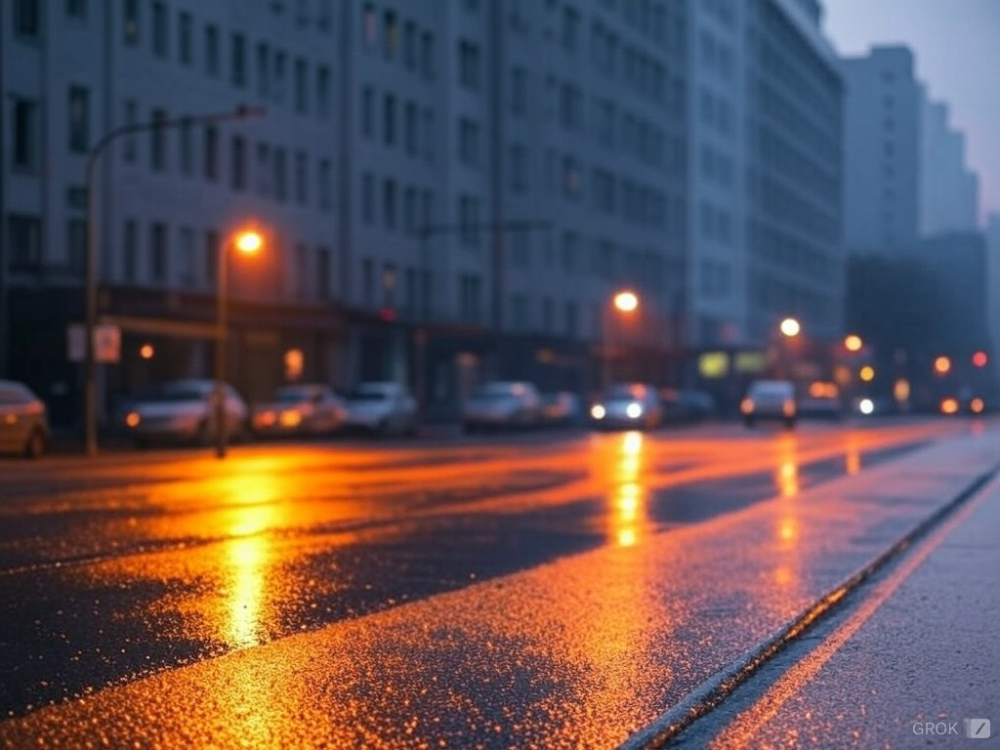
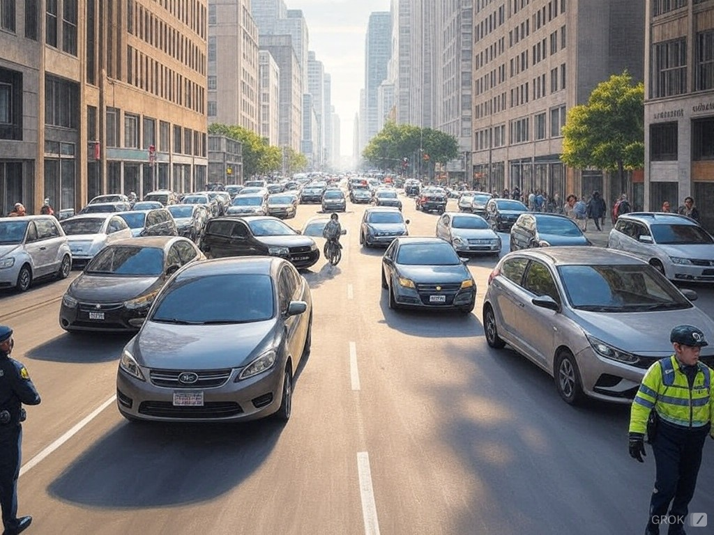

Güvenli Sürüş İpuçları
1. Araç Kontrolü ve Bakımı
- Araç bakımlarını düzenli yapın: Motor, frenler, lastikler, farlar ve silecekler gibi araç donanımlarının düzenli bakımını yaparak, olası arızaların önüne geçebilirsiniz.
- Lastiklerinizi kontrol edin: Lastiklerinizi düzenli olarak kontrol edin, diş derinliklerini ölçün ve hava basınçlarını doğru seviyede tutun.
- Fren sistemini kontrol ettirin: Frenler güvenli sürüşün en kritik bileşenidir. Frenlerinizin düzgün çalıştığından emin olun.
2. Sürüş Öncesi Hazırlık

- Kemerinizi takın: Sürücü ve yolcular için emniyet kemeri takmak, hayat kurtarıcıdır.
- Telefon kullanımını sınırlandırın: Telefonu kullanmak dikkatinizin dağılmasına sebep olur. Eğer mutlaka kullanmanız gerekiyorsa, eller serbest özelliği olan bir sistem kullanın.
- Yol ve hava koşullarını kontrol edin: Seyahate çıkmadan önce hava durumu ve yol durumunu kontrol edin. Ani hava değişimleri veya yol kapanmaları gibi durumlar için plan yapın.
3. Trafik Kurallarına Uyun
- Hız sınırlarına uyun: Hız limitlerini aşmamak, kazaların önlenmesinde önemli bir rol oynar. Hızınızı yol ve hava koşullarına göre ayarlayın.
- Trafik işaretlerine dikkat edin: Trafik levhalarına ve işaretlerine dikkatlice uyun. Bu, hem sizin hem de diğer sürücülerin güvenliğini artırır.
- Işıkları ve sinyalleri doğru kullanın: Dönüş yaparken sinyal vermek, diğer sürücülerin ne yapacağınızı anlamalarını sağlar.
4. Dikkatli Olun
- Mesafe bırakın: Diğer araçlardan güvenli bir mesafe bırakmak, ani frenlemeler durumunda kazaları önler.
- Öndeki aracı takip etme mesafesini artırın: Özellikle yağmur, kar veya sisli havalarda takip mesafesini artırmak daha fazla güvenlik sağlar.
- Yorgunluktan kaçının: Uzun süreli sürüşlerde düzenli olarak mola verin. Yorgunluk, dikkatinizin dağılmasına ve reaksiyon sürenizin uzamasına neden olabilir.
5. Hava Koşullarına Göre Sürüş
- Yağmurda dikkatli sürüş: Yağmurda yollar kaygan olabilir, fren mesafesi uzar. Hızınızı azaltın ve su birikintilerinden kaçının.
- Sisli havalarda düşük hızda gidin: Sis, görüş mesafesini azaltır. Farlarınızı düşük ayarda açarak ve hızınızı azaltarak güvenli sürüş sağlayın.
- Karla kaplı yollarda dikkatli olun: Kar ve buzlu yollarda sürüş yapmak oldukça tehlikeli olabilir. Araçları ağır sürmek ve ani hareketlerden kaçınmak gerekir.
6. Savunmacı Sürüş Yapın
- Diğer sürücüleri tahmin edin: Trafikte her zaman diğer sürücülerin ne yapacağını tahmin etmeye çalışın. Aniden yol değiştiren veya kurallara uymayan sürücülere karşı dikkatli olun.
- Acil durumlardaki reaksiyonlarınızı iyileştirin: Bir tehlike ile karşılaştığınızda sakin kalmak ve doğru şekilde tepki vermek önemlidir. Araçları düzgün şekilde yönlendirmek ve fren yapmak, kazaların önlenmesine yardımcı olabilir.
7. Gece Sürüşü
- Farlara dikkat edin: Gece sürüşü, görüş mesafesini kısıtlar. Farlarınızı doğru şekilde ayarlayın, karşıdan gelen araçların farlarını gözünüzde kamaştırmaması için sağ şeritteki araçlara dikkat edin.
- Farkındalığınızı artırın: Gece görüşü sınırlı olduğu için daha dikkatli olun. Özellikle yaya geçitleri, kavşaklar ve virajlar gibi riskli noktalar için daha dikkatli olun.
8. Trafik Sıkışıklığından Kaçının
- Zamanlamayı iyi yapın: Trafik yoğunluğunun olduğu saatlerde seyahat etmeyi kaçının. Örneğin sabah ve akşam yoğun iş trafiği saatlerinde, sürüşün stresi ve riskleri artar.
- Alternatif güzergahları kullanın: Eğer trafiğin çok yoğun olduğunu fark ediyorsanız, alternatif yolları kullanarak daha rahat ve güvenli bir yolculuk yapabilirsiniz.
9. Trafik Kazaları
- Kaza durumunda ne yapmalısınız?
- Panik yapmayın: Sakin olun, diğer sürücülerle iletişime geçin ve gerekli yardım ekiplerini arayın.
- Gerekli bilgileri toplayın: Kaza anında araç bilgileri, şahıs bilgileri ve tanık bilgilerini toplayın.
- Kazayı raporlayın: Yetkililere kaza durumunu bildirin ve gerekirse kaza raporu oluşturun.
10. Özellikle Çocuklar ve Yaşlılara Dikkat
- Çocukların güvenliği: Çocukların araçta güvenli bir şekilde oturduklarından emin olun. Çocuk koltukları, doğru yaş ve kiloya göre yerleştirilmiş olmalıdır.
- Yaşlı sürücülere dikkat: Yaşlı sürücüler daha düşük tepki sürelerine sahip olabilir. Onların hareketlerini gözlemleyerek daha dikkatli bir sürüş sergileyin.